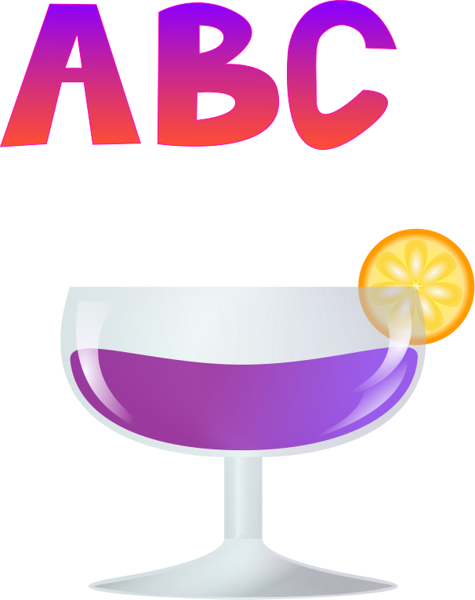

Vježba 2: Inkscape: vektorska grafika, koordinatni sustav, bezierova krivulja
Vježba 3: Inkscape: sustavi boja, transformacije, dupliciranje, grupiranje

Vježba 4: Inkscape: složeni objekti, gradijenti
Projektni zadatak 1: Inkscape
Vježba 5: Gimp: tehnike retuširanja fotografija
Vježba 6: Gimp: selekcije, maske, kanali boja, koloriranje
Vježba 7: Gimp: fotomontaža, selekcije, maske, korekcija boja
Projektni zadatak 2: Gimp
Vježba 8: Olive/Gimp: editiranje videa
Vježba 9: Olive: obrada videa, zvuka i teksta